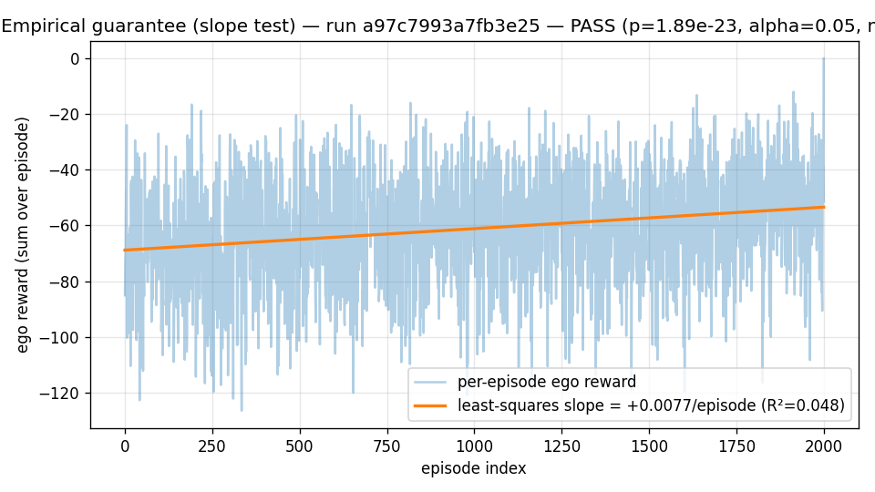

Why heterogeneous ad-hoc teamwork?
Most multi-robot manipulation benchmarks assume identical embodiments and shared training. Real-world deployment — hospital logistics, disaster response, factory retooling — routinely pairs robots with incompatible action spaces, differing sensor modalities, and no shared policy checkpoints.
CONCERTO and CHAMBER focus on the hardest variant of this problem: the ego agent's partner is opaque (no policy access), heterogeneous (different morphology and action frequency), and ad-hoc (no prior joint training). The six axes that make this hard are: action-space heterogeneity (AS), observation-modality heterogeneity (OM), control-rate mismatch (CR), communication degradation (CM), partner familiarity (PF), and safety (SA). See ADR-007 for the axis selection rationale and staging plan.
The four named precedents CONCERTO differentiates against — Liu 2024 RSS, COHERENT, Huriot-Sibai 2025, and Singh 2024 — each solve a subset of these axes. No prior system addresses all six simultaneously.
Why ego-PPO under a frozen partner?
ADR-002 selects on-policy PPO as the Phase-0 ego training substrate. The reasoning is theoretical: when the partner's policy is frozen, the multi-agent task degenerates to a single-agent MDP from the ego's perspective — the partner's actions are part of the transition kernel, not the ego's gradient. Huriot-Sibai 2025 Theorem 7 states that ego-only PPO is then monotone-improving in expectation, which is the strongest theoretical guarantee available for this setting.
The empirical-guarantee experiment (M4b-8b) verifies that
guarantee holds in practice on a real env at the project's frame
budget. The 100k-frame ego-AHT HAPPO run against
configs/training/ego_aht_happo/mpe_cooperative_push.yaml — a 2-agent
cooperative-coverage task in the spirit of PettingZoo's
simple_spread_v3, with a scripted heuristic partner — produces this
reward curve:

The plotted line is the least-squares regression on per-episode reward against episode index. The trainer drives an ~15-reward-unit positive drift over the run (slope ≈ +0.0077/episode, p ≈ 2 × 10⁻²³ one-sided against the null "slope ≤ 0"). Two methodology notes:
- The statistic is a slope test, not a moving-window non-decreasing- fraction. Per-episode reward stdev on this task is ~20, so adjacent moving-window-of-10 means form a near-zero-mean random walk that doesn't reflect the underlying learning signal. The slope test integrates over the whole curve and is robust to that noise. See issue #62 for the diagnostic walk-through that led to this replacement.
- The trainer correctly handles time-limit truncation. An earlier
bug conflated time-limit truncation (
truncated=True, terminated=False) with true termination, zeroing the GAE bootstrap value at every episode boundary on time-limit-only envs like the MPE cooperative-push task. The fix incompute_gae(per Pardo et al. 2018) bootstraps with V(s_truncated_final) at truncation boundaries, ~doubling the observed learning rate. See PR #70 for the empirical A/B comparison.
What this validates
Three things, in order of certainty:
- The ego-PPO substrate the project uses for Phase-0 does in fact produce a statistically significant positive learning signal on the frozen-partner task within the budget. The trip-wire was designed to be loud if this failed; it currently passes with very wide margin.
- The trainer's GAE math, importance-ratio reduction, and rollout
buffer correctness are all consistent with single-agent PPO on the
same buffered
(rewards, values, next_values, boundaries)tuples, per the property test attests/property/test_advantage_decomposition.py. So the experiment isn't measuring trainer wiring; it's measuring algorithm/task fit. - The 100k-frame budget is sufficient for the positive-slope signal to dominate noise. It is not sufficient for the policy to reach the greedy-oracle ceiling on this task (eval at step 100k is roughly -50; the greedy-nearest-landmark oracle achieves -41). Closing that gap is a separate scaling question outside Phase-0's scope.
What this does NOT claim
The empirical-guarantee experiment is a necessary-condition trip- wire, not a sufficient one. A passing slope test does not imply:
- That the trainer would still learn under a non-frozen partner (joint training is out of scope for ADR-002).
- That the chosen hyperparameters are optimal.
- That the same setup will produce learning on harder tasks (Stage 1/2/3 spikes, per ADR-007).
If the trip-wire ever fails on the production config — fraction or slope, depending on which statistic is canonical at the time — the project stops and revisits ADR-002, per the escalation policy in plan/05 §6.
Reproduce locally
The full reproduction lives in
scripts/repro/empirical_guarantee.sh and runs via:
make empirical-guarantee
It runs pytest -m slow tests/integration/test_empirical_guarantee.py
against the production YAML, prints the device report, and exits
non-zero if either the wallclock budget is exceeded or the slope test
trip-wire fires. Total CPU wall-time is ~10 seconds on a modern
laptop.